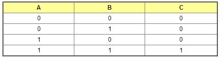

<div id="jsn-maincontent" class="span9 order1 row-fluid">
  <div id="jsn-maincontent_inner">
    <div id="jsn-centercol">
      <div id="jsn-centercol_inner">
        <div id="jsn-mainbody-content" class="jsn-hasmainbody">
          <div id="jsn-mainbody-content-inner1">
            <div id="jsn-mainbody-content-inner2">
              <div id="jsn-mainbody-content-inner3">
                <div id="jsn-mainbody-content-inner4" class="row-fluid">
                  <div id="jsn-mainbody-content-inner" class="span12 order1">
                    <div id="jsn-mainbody">
                      <div id="system-message-container"></div>

                      <div
                        class="item-page"
                        itemscope
                        itemtype="https://schema.org/Article"
                      >
                        <meta itemprop="inLanguage" content="en-GB" />

                        <div itemprop="articleBody">
                          <p></p>
                          <h1 style="text-align: center">
                            Boolean algebra in programming
                          </h1>
                          <p>
                            When we want to do a simple test on some data, we
                            use a maths operator. We can combine tests by using
                            Boolean operators. We need to know our truth tables
                            to be able to combine tests. Remember, 1 in a truth
                            table stands for TRUE and 0 stands for FALSE.
                          </p>
                          <p>
                            <strong>Example 1</strong><br />Conside this
                            problem:
                          </p>
                          <p>
                            <strong
                              >&nbsp; &nbsp; &nbsp;(34 &gt;= 34) AND (23 &lt;
                              5)&nbsp;</strong
                            >
                          </p>
                          <p>
                            This is like an AND gate, with (34 &gt;= 34) as one
                            input and&nbsp;(23 &lt; 5) as the other input.
                          </p>
                          <p>
                            <br />When we refer to the truth table for an AND
                            gate, we can see that both inputs must be TRUE for
                            the output to be TRUE.
                          </p>
                          <p>
                            
                          </p>
                          <p>
                            <strong
                              >&nbsp; &nbsp; &nbsp;So, (34 &gt;= 34) is
                              TRUE.</strong
                            ><br /><strong
                              >&nbsp; &nbsp; &nbsp;But (23 &lt; 5) is
                              FALSE.</strong
                            >
                          </p>
                          <p>
                            Looking at the truth table, if the first input is 1
                            (TRUE) and the second is 0 (FALSE), then the output
                            is 0 (FALSE).
                          </p>
                          <p>
                            <strong>Example 2</strong><br />Consider this
                            problem:
                          </p>
                          <p>
                            <strong
                              >&nbsp; &nbsp; &nbsp;(16 &lt; 4) OR (121 &gt;
                              45)</strong
                            >
                          </p>
                          <p>
                            This is like an OR gate, with&nbsp;(16 &lt; 4) as
                            one input and (121 &gt; 45) as the other input.
                          </p>
                          <p>
                            <br />When we refer to the truth table for an OR
                            gate, we can see that at least one input must be
                            TRUE for the output to be TRUE.&nbsp;<br /><br /><strong
                              >&nbsp; &nbsp; &nbsp;So, (16 &lt; 4) is
                              FALSE</strong
                            ><br /><strong
                              >&nbsp; &nbsp; &nbsp;but (121 &gt; 45) is
                              TRUE</strong
                            >
                          </p>
                          <p>
                            Looking at the truth table, if the first input is 0
                            (FALSE) and the second is 1 (TRUE), then the output
                            is 1 (TRUE).
                          </p>
                          <p>
                            <strong>Example 3</strong><br />Consider this
                            problem:
                          </p>
                          <p>
                            <strong
                              >&nbsp; &nbsp; &nbsp;NOT((16 &lt; 4) OR (121 &gt;
                              45))</strong
                            >
                          </p>
                          <p>
                            This is the same as in the last example, except we
                            have added a NOT and some extra brackets. We know
                            from NOT's logic gate that it has just one input.
                          </p>
                          <p>
                            
                          </p>
                          <p>
                            The truth table shows us that we have just one input
                            and the output is the opposite of the input.
                          </p>
                          <p>
                            
                          </p>
                          <p>
                            As with any maths problem, we do the inside brackets
                            first and work our way to the outside. (16 &lt; 4)
                            is FALSE&nbsp;but (121 &gt; 45) is TRUE making the
                            output TRUE. But then we have to NOT this, so TRUE
                            becomes FALSE.
                          </p>
                          <p>
                            Take care with brackets! Always match them up to
                            check you haven't missed one off or got an extra one
                            when writing code. Always do the inner brackets
                            first, combine any logic from inside brackets and
                            then move to the outside. Brackets are very useful
                            in Boolean algebra and in programming as they should
                            make what you have to do and in what order much
                            clearer.
                          </p>
                          <p>
                            <strong>Q1.</strong> State whether each of the
                            following tests is TRUE or FALSE.
                          </p>
                          <p>
                            <strong>a.</strong> (10 &gt; 20) OR (30 &gt; 40)<br /><strong
                              >b.</strong
                            >
                            (5 &lt; 6) AND (20 &gt;= 10)<br /><strong
                              >c.</strong
                            >
                            (5 &lt;= 10) AND (35 &lt; 50)<br /><strong
                              >d.</strong
                            >
                            (3 != 3) OR (5 == 5)<br /><strong>e.</strong> (7
                            &gt;= 8) OR (14 != 15)<br /><strong>f.</strong> NOT
                            ((50 &gt; 40) AND (10 &gt; 5))<br /><strong
                              >g.</strong
                            >
                            NOT (5 &gt;= 5)<br /><strong>h.</strong> NOT (20 !=
                            20)<br /><strong>i.</strong> NOT ((34 &gt; 24) OR (3
                            &gt; 1))<br /><strong>j.</strong> NOT ((20 &lt; 30)
                            AND (30 &gt; 5))<br /><strong>k.</strong> ("Fred"
                            &gt; "John") OR ("Cat" &lt; "Dog")<br /><strong
                              >l.</strong
                            >
                            NOT (("Fred" &gt; "John") OR ("Cat" &lt; "Dog"))<br /><strong
                              >m.</strong
                            >
                            NOT (("table" &gt; "Table") AND ("Left" &lt;
                            "Left"))<br /><strong>n.</strong> NOT ( NOT ("up"
                            &lt; "down"))
                          </p>
                          <p>
                            <strong>Extension task</strong><br />Write your own
                            Boolean tests and work out the answer. Then give
                            swap your questions with someone in your class and
                            see if you can do each others.
                          </p>
                          <p></p>
                        </div>
                      </div>
                    </div>
                  </div>
                </div>
              </div>
            </div>
          </div>
        </div>
      </div>
    </div>
  </div>
</div>
